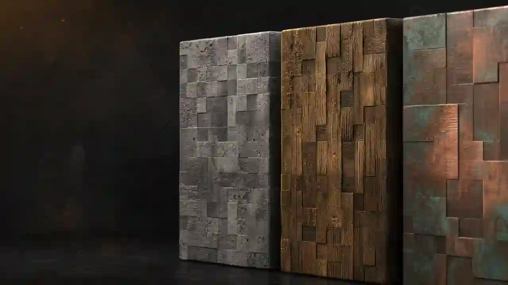

NORMAL
Detalle que sigue
la textura.
La normal se deriva de cambios de luminancia y mantiene la dirección de superficie en RGB.
BANCO DE MATERIALES / LOCAL
Genera capas PBR normales, con lectura de material moderada. Mantiene la textura original; no la transforma en un espejo Glossy.

02 / MATERIAL DE ORIGEN
Solo se procesan bloques, ítems y entidades. GUI, fuentes, pantallas, mapas, pinturas y sonidos se ignoran por completo.
03 / MAPAS DE SALIDA
La salida Java crea un resource pack ZIP con color preservado, normal derivada, profundidad en alpha y mapa LABPBR _s.
RESULTADO
RESOURCE PACK ZIP · JAVA LABPBR0 archivos en colaNORMAL
La normal se deriva de cambios de luminancia y mantiene la dirección de superficie en RGB.
PROFUNDIDAD
Una escala lineal de luz y bordes produce altura para alpha LABPBR o heightmap Bedrock.
PROPIEDADES
El color original permanece intacto y la propiedad se asigna con cautela.
SALIDA
Todos los cálculos y compresión ZIP ocurren dentro de este navegador.
LÍMITES CLAROS
Sin imágenes individuales. Java acepta ZIP/JAR; Bedrock, ZIP/MCPACK. Un JAR se lee solo como fuente Java y siempre exporta un ZIP.
Profundidad explícita. Java guarda height/displacement en el alpha de _n. Bedrock usa Normal o Heightmap, nunca ambos en el mismo Texture Set.
Compatibilidad real. Bedrock Vibrant permite Normal + MER en bloques, ítems y entidades; el modo Heightmap y RTX se restringen a bloques.
Control local. Límite de 300 MB y 20 000 texturas elegibles por archivo. Las texturas no abandonan el dispositivo.